知新 PaperDaily 温故：重读已有文献与自己的证据、判断，弄清前人做到哪一步。 知新：发现新线索，形成新问题。
以有来源的资料补充个人理解，持续跟进研究现状；保存证据与判断，让 Agent 接续研究。
| 领域 | 按领域列举的期刊来源示例 |
|---|---|
| 经济学 | American Economic Review · Quarterly Journal of Economics · Journal of Political Economy · Econometrica · Review of Economic Studies |
| 金融 | Journal of Finance · Journal of Financial Economics · Review of Financial Studies |
| 会计 | The Accounting Review · Journal of Accounting Research · Journal of Accounting and Economics |
| 管理、组织与战略 | Academy of Management Journal · Academy of Management Review · Administrative Science Quarterly · Organization Science · Journal of International Business Studies · Strategic Management Journal |
| 营销 | Journal of Marketing · Journal of Marketing Research · Journal of Consumer Research · Marketing Science |
| 信息系统与计算 | MIS Quarterly · Information Systems Research · INFORMS Journal on Computing |
| 管理科学与运营 | Management Science · Operations Research · Journal of Operations Management · Manufacturing & Service Operations Management · Production and Operations Management |
核验：2026-11-01；期刊观测快照为10/31。所列来源均有采集批次；仅列来源示例，不是完整期刊目录。
论文数不代表全文覆盖；数据集为已核验下界；日报为公开示范。来源、缩写与口径 · 日报筛选过程
“我还回答不了”，可能需要补充学习、补充检索，也可能需要开展新的研究。
我尚未掌握，
已有研究已提供答案。
下一步：找到相关研究，通过阅读、比较与讨论形成理解。
平台尚未收录、未检索到，
或未正确理解相关研究。
下一步：扩展来源、核对原文、修正理解，明确覆盖不足。
在明确范围与时间条件下，
现有研究仍未充分回答。
下一步：检查证据边界，提出值得进一步研究的问题。
三类缺口可并存，尚不能判断时保留“待核”；“没搜到”不能直接写成“无人研究”。案例、记录与委托 →
把每天出现的新论文，逐步接回自己的研究问题。
每天的新论文拓展已有研究，也带来新的问题。
分类、链接、形成图谱，让散落的论文成为可检索的研究线索。
日报与自己的 Agent，把新材料接到已有兴趣、证据与待核事项。
借助 RiD 和原文阅读，通过比较与讨论形成理解，再留下下一轮任务。
圈的大小、位置和速度仅作概念示意，不代表真实比例或严格集合包含关系；收到论文不等于已经理解。
邮箱已验证的免费账号每日 100；有效 Pro／机构成员每日 300。个人日报准入另行核对；余额与结算看「积分」页。权益说明
明确对象、结果与情境，形成一条检索表述
选取关键论断，记录来源、材料深度与核验状态
形成 3–5 篇论文的比较矩阵，说明结论是否可比
留下原文位置、自己的理解与判断依据
设置研究兴趣与待跟进问题，检查后续日报中的线索
完成一次委托与验收，保存可供下一轮调用的研究记录
以「研究推进卡」汇总问题、证据、待核验事项与下一步行动。
| 研究环节 | 典型表现 | 今天用什么解决 |
|---|---|---|
| 问题太大 | 只有方向，说不清要解释什么 | 问清楚嘛 边输入边追问：对象、结果、方法、时间 |
| 材料太散 | 搜到很多，不知哪句可信 | 综述 + 角标 从引用入口核对关键论断与出处 |
| 结论差异与可比性 | 都说“AI 提高效率”，却不可比 | 综述矩阵 对象、方法、数据、材料深度放一张表 |
| 理解不深 | 能复述结论，说不清证据在哪 | 深读 RiD 带着问题读原文，留下证据 |
| 每次重来 | 上周读的，这周又从零开始 | 兴趣 · 日报 · 开放问题 让新论文来找旧问题 |
围绕问题检索、比较和阅读，保存证据与待核验事项；再结合后续日报，判断哪些新线索值得继续研究。
通过 MCP 与 skills 调用整条回路——读日报、查论文库、做比较、派阅读卡、写研究记录。研究者定方向，Agent 组织行动。
AI 让新员工今天做得更好，
会不会也让他以后独立做得更好？
两篇历史研究：客服现场、专业写作
日报带来 Agent 执行与协作的新论文
新材料支持或修订了什么？还需核对哪些原文？
从引用入口回到原文或摘要，核对材料是否支持这条论断；缺少出处的内容保留为待核线索。
区分全文、摘要与平台抽取；方法和机制的具体判断，需要回到相应原文核验。
说明哪些判断得到支持或修订，哪些概念与边界更清楚，以及仍需核验的问题。
后续练习的完成标志，都包含来源核对、材料深度与研究记录。
| 01 问清楚 | ask 澄清 · 动手练习 |
| 02 找答案 | 综述与角标 · 动手练习 |
| 03 比一比 | 综述矩阵 · 动手练习 |
| 04 读原文 | 深读 RiD · 动手练习 |
| 05 跟进展 | 日报与盯查 · 动手练习 |
| 接上 | MCP 或 skills · 动手练习 |
| 委托 | 好委托的六个部分 |
| 验收 | 验收四问与实测问题 |
| 接续 | 第二轮、日报深析、研究记录 |
| 实战 | 向 Agent 委托，并验收产出 |
上半场学到的每个判断，都是下半场验收 Agent 时要用的标准。中场可根据现场情况休息。
明确研究问题，才能判断哪些文献需要优先阅读。
输入一个模糊的念头
走两轮澄清
写下一句可检索的问题
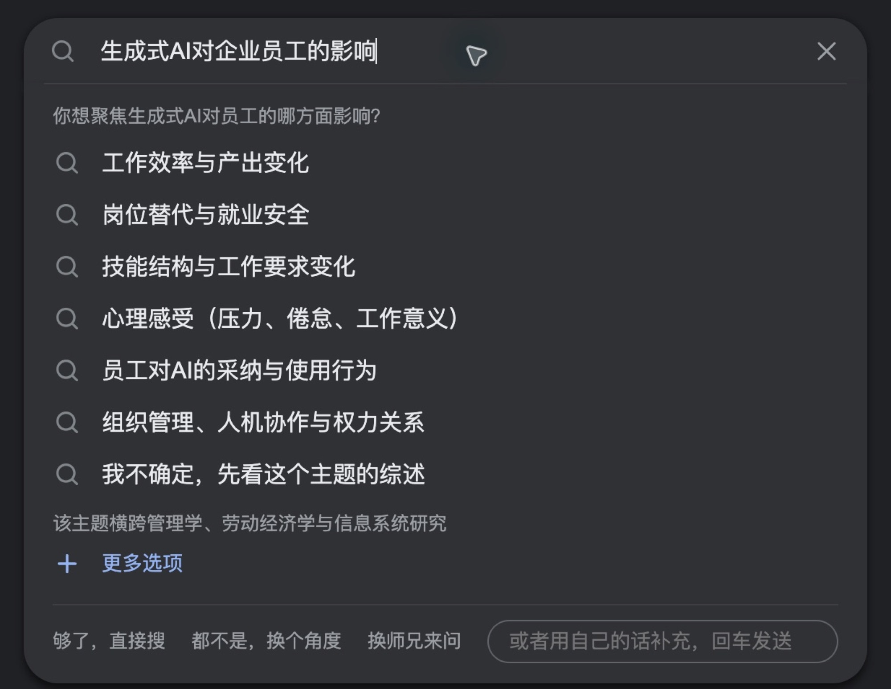
生成式 AI 对企业员工有什么影响？
对象、结果、时间都没定，什么论文都“相关”
引导式 AI 是否改善新员工
撤去辅助后的独立表现？
知道该找什么样本、什么结果、什么设计
留意：澄清也会带入预设。写问题时保留“促进 / 无效 / 损害”三种可能，不要把答案写进问题里。
你的问题里有具体的对象和结果，并能据此说明该检索哪些文献。
从关键论断回到论文，核对来源、材料范围与支持程度。
生成一份带出处的综述
点开两个角标核对
收藏 3–5 篇值得读的
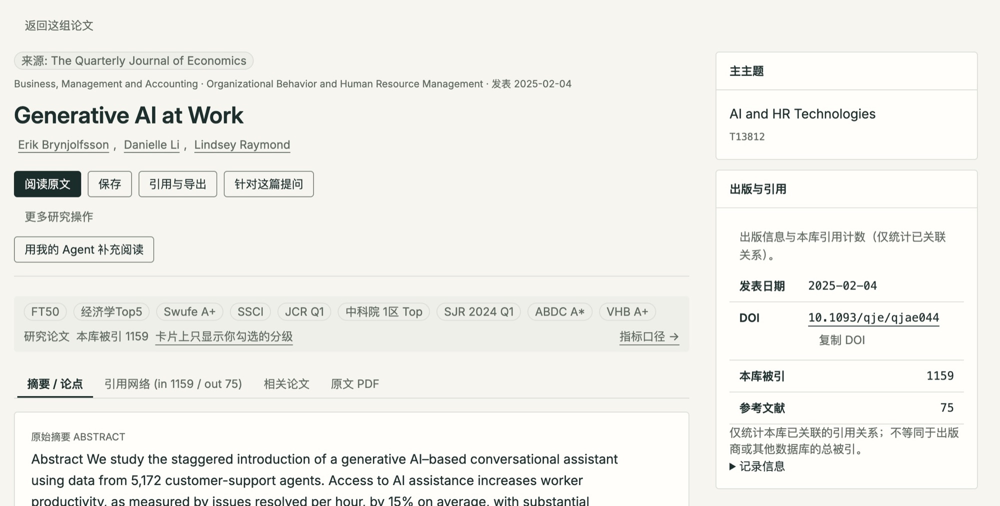
截图：2026-10-31 实际界面，仅裁切
| 论文 · 作者 · 出处 | 谁在用 AI | 测了什么 | 怎么识别 | 对我们的问题 |
|---|---|---|---|---|
| Generative AI at WorkErik Brynjolfsson · Danielle Li · Lindsey Raymond The Quarterly Journal of Economics, 2025 | 企业客服员工 | 工作绩效，及与学习相关的证据 | AI 分阶段上线的现场数据 | 提供现场绩效与学习线索；仍须区分即时收益与持续能力 |
| Experimental evidence on the productivity effects of generative artificial intelligenceShakked Noy · Whitney Zhang Science, 2023 | 完成职业写作任务的专业人士 | 当场任务的速度与质量 | 在线随机实验 | 可识别即时任务效应；未直接检验撤辅后的独立能力 |
即时绩效提升已有证据；学习解释、长期保持与跨任务迁移，需要逐项核查。
收藏 3–5 篇论文，完成至少一条关键论断的核验，说明支持程度、材料深度与待核验事项。
比较对象、指标与设计的差异，可以帮助明确下一项研究问题。
用收藏生成综述矩阵
看清材料深度
写下一处比较断点
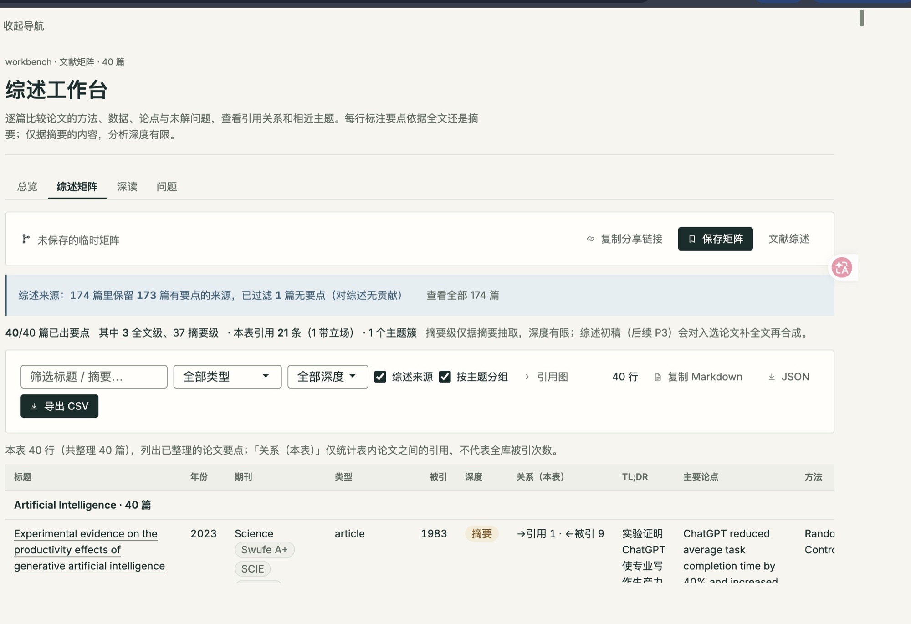
矩阵生成免费 · 截图：2026-10-31 实际界面
| 材料 | 来源 | 观察单位与结果 | 能帮我们什么 |
|---|---|---|---|
| MASBench: Benchmarking LLM-based Multi-Agent Collaboration under Partial ObservabilityChu 等 · arXiv, 2026 | 日报 | 多智能体系统的协作表现与成本 | 拆开“执行”与“协调”怎么测 |
| Bridging Foundational and Agentic Capabilities of LLMsGuo 等 · arXiv, 2026 | 日报 | 模型的基础能力与实际操作表现 | 能力怎样转化为执行 |
| Generative AI at WorkBrynjolfsson, Li & Raymond · QJE, 2025 | 论文库 | 客服员工的绩效与学习 | 现场的历史基线 |
| Experimental evidence on the productivity effects of generative artificial intelligenceNoy & Zhang · Science, 2023 | 论文库 | 写作者的即时速度与质量 | 实验的历史基线 |
技术基准分数 ≠ 企业员工效应
AI 从“给建议”变成“替你执行”，
员工学习的条件会改变吗？
你能依据矩阵说明哪些结果可比、哪些需分开讨论，或还缺哪些信息，并指出对应字段。
先围绕一个争点定向阅读，再决定是否需要扩展阅读。
带着问题打开一篇论文
选段理解、对照译文
留下一条证据
作者没有检验撤去 AI 之后员工的表现。
尚未核对已有证据，先形成了“空白”判断。
已有 AI 临时中断期间的表现分析；
但长期保持与跨任务迁移仍待核。
先补理解、纠正概括，再核查仍未回答的问题。
比较 AI 建议因技术故障暂停时的处理表现
中断稀少、不必然随机，估计较噪
核对 QJE 正式版是否保留这组分析
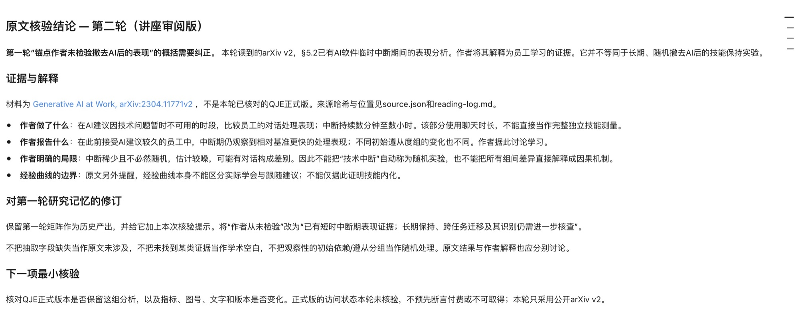
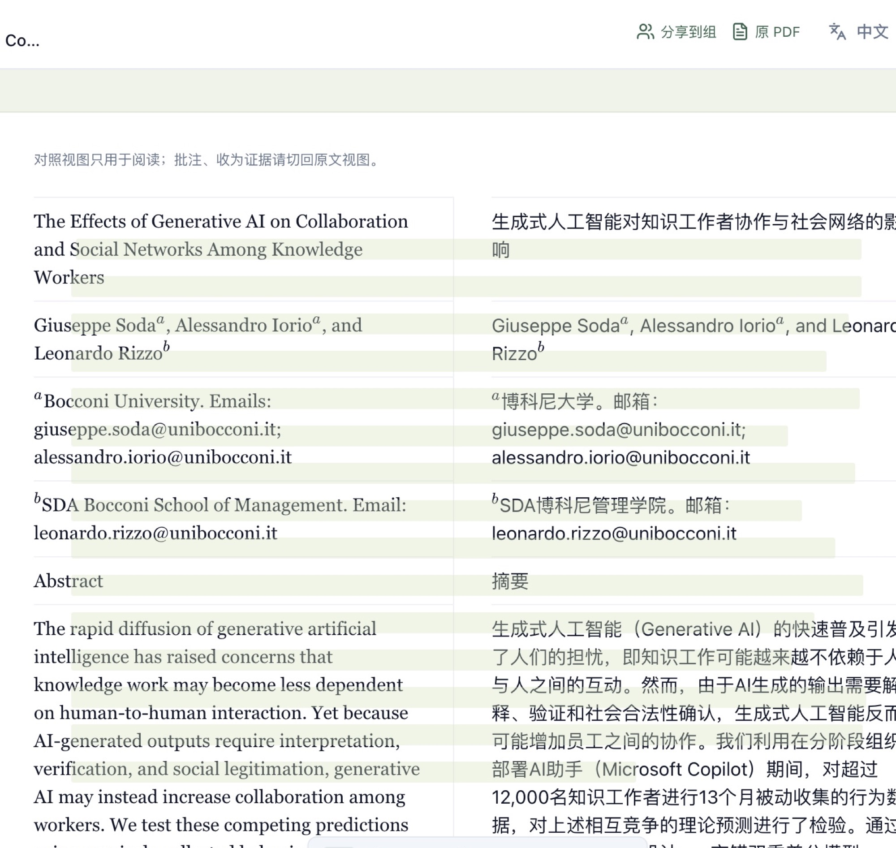
截图为2026-10-31阅读界面；新侧栏与核验功能以现场界面为准。
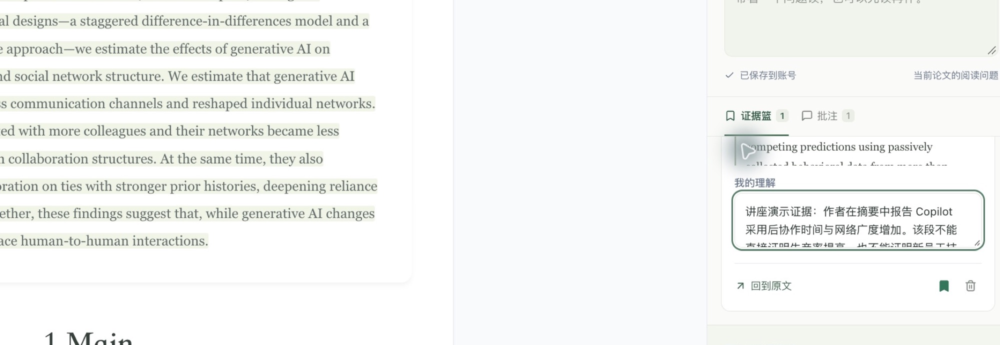
“AI 增加协作”——下次再看，已经不知道样本、指标和适用边界
下次可以直接回到同一个争点继续
你有一条标明来源与位置的阅读记录，说明支持、修订或未知；替代练习标明未读全文。
研究不是一次搜索，是一段持续的观察。
写一段研究自述
检查抽到的兴趣点
把未解问题设为「盯查」
10/31示范：近7日候选94篇 → 分层输入30篇 → 主报告14篇；另列前沿速览5篇
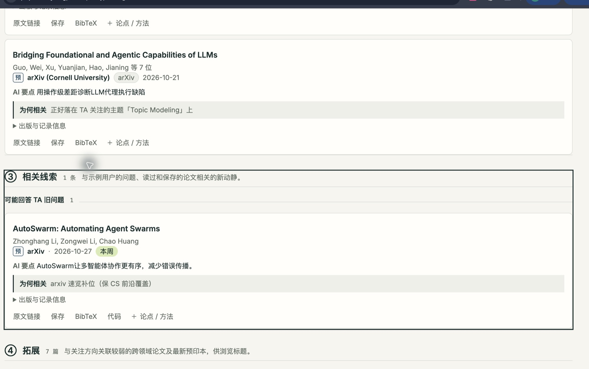
| 层次 | 示例 | 帮助你做什么 |
|---|---|---|
| 必读 | 3篇 | 优先关注高度相关、关注作者或引用关联的论文 |
| 视野更新 | 8篇 | 按主题组织，共看进展与差异 |
| 你的线索 | 1篇 | 对照旧研究与问题，判断是否值得追查 |
| 意外发现 | 2篇 | 拓宽视角，寻找相邻方向的连接 |
前沿速览另列5篇：从相关计算方向的近期 arXiv 中补充，不计入上述四层14篇。
核对“为何相关”与原文；入选和语义相似都不代表问题已被回答。
2026-10-31公开示范；数量随方向与日期变化。召回、候选池与分层依据 →
我研究生成式 AI 对企业新员工技能形成的影响，重点关注 AI 辅助撤去后的独立表现、技能保持与跨任务迁移。优先关注有对照组、分阶段上线或纵向追踪的实证研究，也关注人机协作中的核验与返工负担。暂不关注只报告使用满意度的产品介绍。
兴趣匹配符合研究范围，问题状态已核对；具备日报准入时，后续检查是否出现值得核验的相关线索。
让 Agent 组织约定的研究步骤，记录结果与未知，供下一轮继续使用。
接上 MCP 或 skills
写一份研究委托
验收 Agent 的研究产出
让下一次接得上
| 研究组织 | 人在网页中操作 | Agent 按目标调用基座 |
|---|---|---|
| 步骤安排 | 你选择、比较并保存材料 | 你给目标，Agent 拆任务并调用工具 |
| 材料范围 | 平台论文、前置分析与已存研究对象 | 按授权结合平台资料、网页原文、本地 PDF 与笔记 |
| 执行方式 | 按页面完成检索、阅读与记录 | 将检索、比较、阅读与记录组织为任务 |
| 研究积累 | 收藏、矩阵、问题与阅读记录 | 形成矩阵、阅读卡与核验记录，按授权保存 |
| 下一轮接续 | 回到已存对象继续阅读与比较 | 读取平台及本地记录，组织下一轮任务 |
定问题与方向，划定授权范围，验收每一份产出，决定理论位置和下一步
论文库、前置分析、日报与持续观察、收藏 · 矩阵 · 深读 · 开放问题等研究记忆
理解这次目标，拆成任务；通过 MCP / skills 调用基座；通过浏览器取得授权原文、读本地材料；和你深入讨论
带着争点读原文与译文，留下证据与批注；读出的新疑问回到 Agent
让已正确配置的 MCP 客户端发现并调用 PaperDaily 工具
把研究步骤写成 Agent 能照着执行的流程
连接成功只证明工具可用；研究完成还要看材料深度、出处和判断——这就是验收要做的事。
课前由助教检查 Python 3.10+ 与本机 key；
完整安装说明与 MCP 可选路径 →
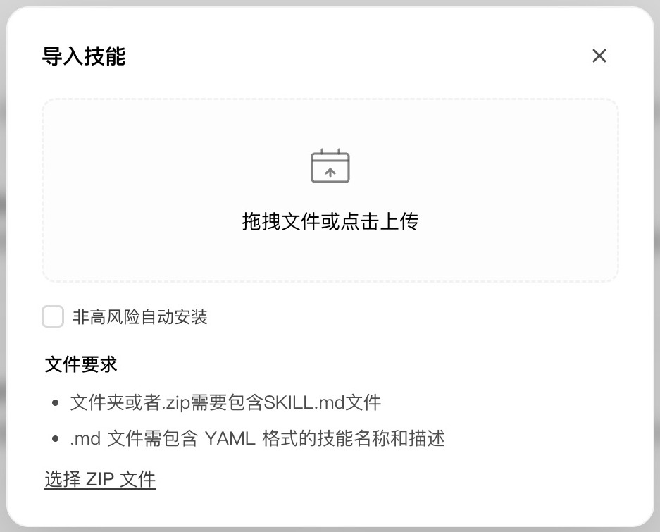
PaperDaily「账号设置 → API Keys」：先选 read:paper、read:digest。skills 从本机 ~/.paperdaily-cli/env 读取。
key 不贴聊天、不截图、不进 Git；已有配置先检查。MCP 已接好的同学可直接做下一页。
你已核对调用记录、paper_id、版本与材料范围；仅返回一个 ID 不算完成调用验收。
PaperDaily 定位论文，浏览器连接授权来源，skill 组织阅读；研究者核验并决定下一步。
获取不等于读过。保存出处、版本、阅读范围与证据锚点；访问受阻或只有试读片段时如实记录。
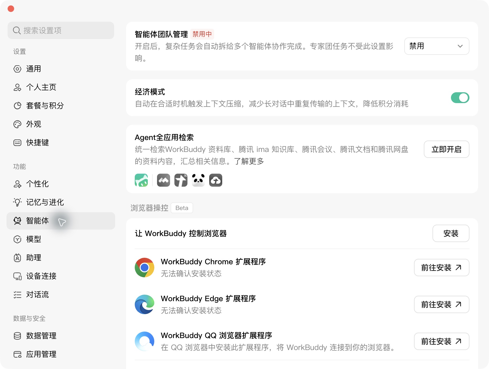
2026-11-01 实拍 · WorkBuddy 5.9.3。入口已核实；Chrome 扩展显示“无法确认安装状态”，尚未完成机构授权原文获取实测。
委托示例、连接检查与验收说明 →
起点可以是一个现象、一篇种子论文，或已有的日报与收藏；先明确本轮目标，再按需推进。
要描述、解释、预测还是改进什么？说明对象、情境、已有判断与本轮交付。
解析种子论文，按主题、相似与引用扩展；保留检索条件、版本、覆盖与失败。
先定每组收什么、要回答什么；逐篇归组、检查覆盖，再选择阅读材料。
核对版本与完整性，按争点阅读；记录实际范围、位置、发现和未知项。
将结论连回证据，区分支持、分歧与待核；核查缺的是个人理解、系统覆盖，还是研究证据。
保存问题、依据、判断及未解原因；读回研究记录，再结合日报安排下一项任务。
先约定本轮做到哪一步。可以只完成问题与检索方案；已有材料就从对应阶段继续。分步委托与产出示例 →
用分类框架和概念矩阵组织文献；在同一问题下核对机制、分析层次与边界。
区分描述、解释、预测与设计行动；围绕研究目标检查证据，不把效果差异直接当成机制。
将证据与讨论形成记录，保存、取回、交接并再应用；日报为已有问题带来新的检查机会。
查版本、完整性、情境相关性和可追溯性；检索排名、取得全文与证据支持分别核验。
围绕概念比较，明确研究目的，让记录能够取回，并按本轮用途核查材料。流程说明与参考 →
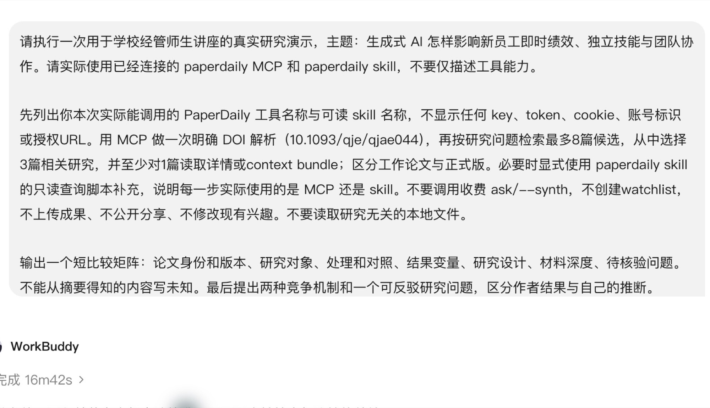
按 DOI 找到锚点论文，核对正式版与工作论文
按主题检索——噪声多
转向锚点论文的相似论文与引用关系
1 篇锚点 + 3 篇相关，读详情，填矩阵
两种待检验机制 + 一个可反驳问题
AI 提供可理解的反馈，员工保留主动练习机会，可能促进技能保持与迁移。
更多步骤交给 Agent 后，人的练习、监督与核验可能重新分配，影响仍需检验。
在明确条件下提出可区分、可检验的预测：两条路径是否并存，何时占主导，需要证据判断。
实测中真的发生过
| 超出范围 | 约定最多 8 篇候选；实际相似检索取了 15 篇、引用取了 25 条 |
| 说过头 | “作者均未正面检验撤去 AI 后的独立绩效”——第二轮读原文被推翻 |
| 数错了 | 日报案例把两个列表的论文混算，后按原始字段改正 |
| 概念混用 | 把“即时写作绩效”说成“撤去 AI 后的独立技能”，中途被拉回 |
comparison.md
next-question.md
争点：作者到底有没有检验撤去 AI 后的表现？
读第一轮的矩阵和下一问；只核一个争点；取一篇公开全文，只读学习 / 中断附近两个小节；记下版本、页码、阅读范围
arXiv v2 §5.2 已有中断期表现分析——第一轮的判断被修订
verification.md
日报深析直接读入这份核验记录，不再重做
这就是“研究记忆”最直观的样子：每一轮留下文件，下一轮从文件开始。上半场第25页的修订，就是 Agent 在这一轮完成的。
先读回上轮问题、证据、判断和未解原因，再读指定日期日报，说明范围与实际读取状态。选最多 3 篇，回论文库核对详情、版本和历史研究。
检查新材料补充了个人理解、暴露了系统遗漏或概括偏差，还是留下待补查的研究问题；不能判断就保留待核。
交付比较矩阵、证据与待核事项、阅读卡和下一任务；不为凑“研究空白”下结论。
未经授权不上传、不分享、不改兴趣、不启动收费综述。
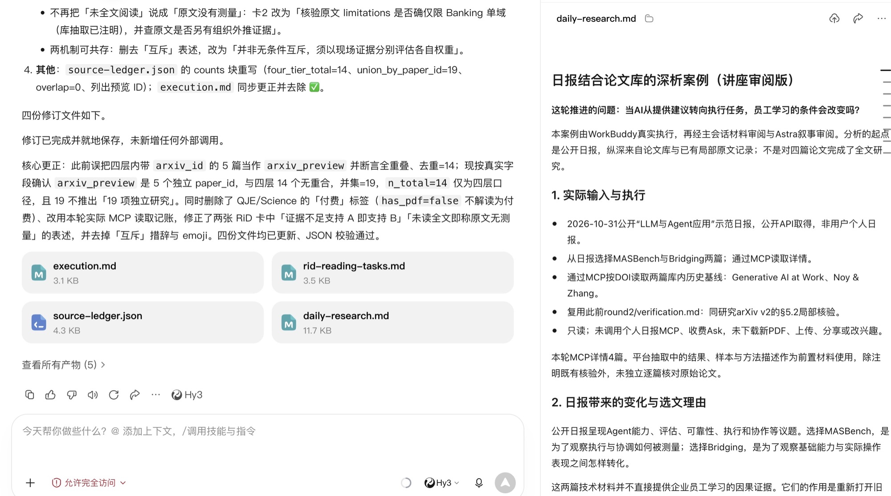
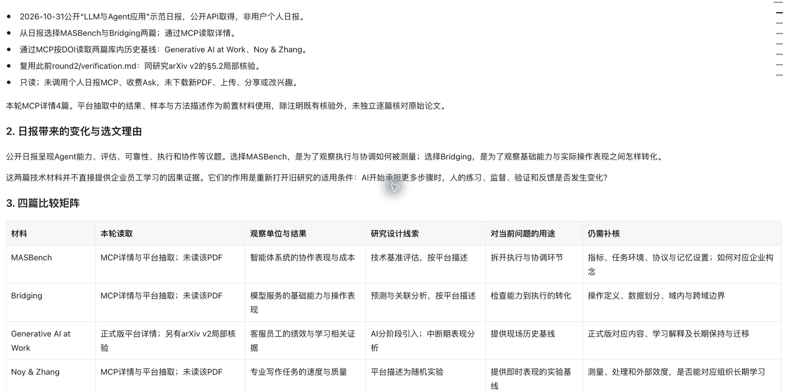
四篇：两篇测机器、两篇测人——比较断点（第22页）
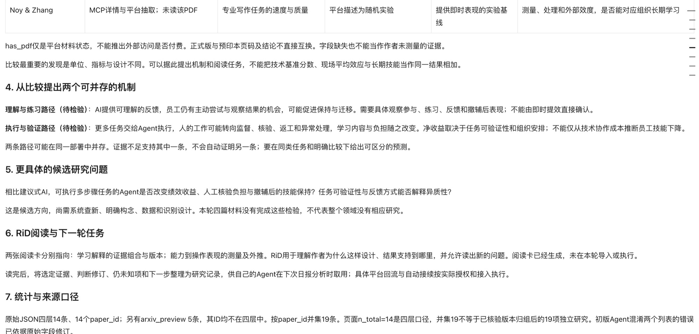
从“给建议”到“替你执行”，员工学习的条件会改变吗？
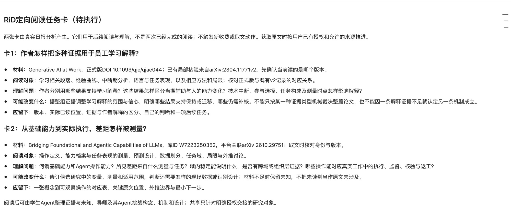
两张卡：读哪里、核对什么、留下哪些证据
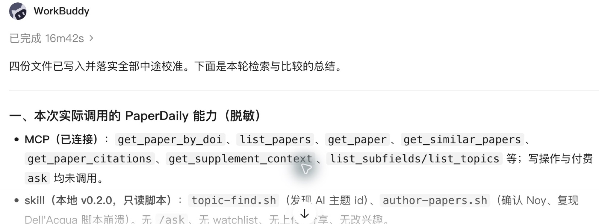
每条材料从哪来、读到多深、哪些没做
研究者在 RiD 细读与留证；本地 Agent 可另行执行深读任务。完成后都由你核对并交接记录。
将问题带入「带着问题读」，核对版本，细读相关段落并记录理解。
| 材料 | Generative AI at Work；区分正式版与 arXiv v2 |
| 读哪里 | 学习、经验曲线、中断期分析及相关局限 |
| 核对什么 | 当期辅助、人的能力变化与识别边界 |
| 带回什么 | 版本、位置、证据与解释、下一项任务 |
按本人授权将摘录与判断交给 Agent，继续比较和分析。
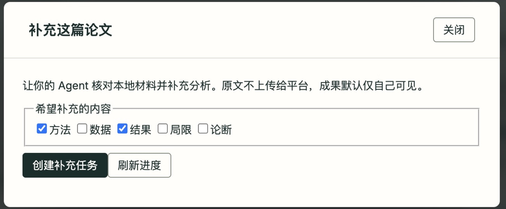
此路径的原始 PDF 留在本地；成果按授权回传主站。
| 记忆存在哪 | 下一次怎样取回 |
|---|---|
| 你本地的研究包 | 矩阵、下一问、核验记录：让 Agent 先读这些文件 |
| PaperDaily 平台 | 已存研究对象：按已开放接口和 key 权限读取；不支持的内容另行交接 |
| 深读 RiD | 问题、证据与批注：读完带回 Agent |
| 日报 | 持续查看新线索；是否生成与命中，需核对实际状态 |
记下“上次为什么没回答”，让新日报与下一次委托接着查。
你有一张矩阵、一张阅读卡和一份五行研究记录，并记录已确认内容、待核验事项与下一步行动。
候选、矩阵、证据与未知；按约定交回研究记录
复核版本与出处，提出竞争解释、设计与识别问题
理论位置、识别策略、下一项最值得做的检验
组内共读（深读 RiD）：发起人选择论文、设置引导问题与截止时间；成员带着问题阅读、记录证据，可设为提交后再查看他人批注。团队围绕同一份材料核对理解与解释。
共享只针对你明确授权交接的研究对象。
| 栏目 | 案例示范 | 你的 |
|---|---|---|
| 我的问题 | 引导式 AI 是否改善新员工撤辅后的独立表现？ | |
| 已有判断 | 短期提效有证据；长期独立表现未定 | |
| 新线索 | Agent 从“给建议”到“执行任务” | |
| 比较断点 | 技术指标与人的结果不可直接比 | |
| 读后修订 | 不能再说“原文没检验撤辅表现”（v2 §5.2） | |
| 下一项最小任务 | 核对 QJE 正式版是否保留这组分析 | |
| 交给 Agent 的委托 | 读本卡与 verification.md，只核正式版对应段落 |
挑一条与旧问题相关的线索，保存或标不相关；值得深挖的交给 Agent
让 Agent 深析一次日报，选一张阅读卡去 RiD 读，再让它更新研究记录
每周回顾：哪些判断得到支持或修订，哪些未知更清楚，下一步如何推进。
ask.paperdaily.org
paperdaily.org
read.paperdaily.org
paperdaily.org/help
第一次使用 · 开放问题
连接 MCP · 安装 skills
github.com/alonegg/paperdaily-skills
机构邮箱验证
有效资格每日 300 积分
以账号权益与期限为准
| 情况 | 处理 |
|---|---|
| 验证邮件没到 | 先跟着公开示范看；检查垃圾邮件；仍未收到时请助教协助 |
| 网络慢 / 综述生成久 | 讲者切到附录截图；学员先看文献栏，不要重复提交 |
| 积分不足 | 看「积分」页流水与恢复时间；矩阵免费，可先做第三段 |
| 论文没有全文 | 按实际材料记录：摘要、平台抽取或未知；通过已授权网页、OA或本人提供的本地文件获取原文 |
| 日报还没有个人内容 | 先用公开示范；核对雷达准入、兴趣保存与生成状态，再检查后续报告 |
| Agent 现场没返回 | 根据现场进度切换到已准备的产出截图 |
AI 给出可理解的反馈，员工仍有主动尝试的机会 → 可能促进保持与迁移。
要观察：参与、练习、反馈、撤辅后表现
更多任务交给 Agent → 人转向监督、核验、返工 → 学习内容与负担改变。
要观察：核验时间、返工率、任务可验证性
候选问题：相比建议式 AI，可执行多步骤任务的 Agent 是否改变绩效收益、人工核验负担与撤辅后的技能保持？
尚需系统查新、明确构念、数据与识别设计。
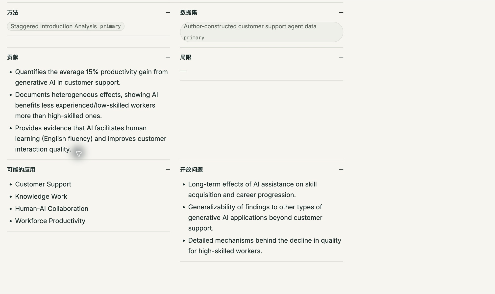
方法、数据与未解问题；缺失字段保留为待核
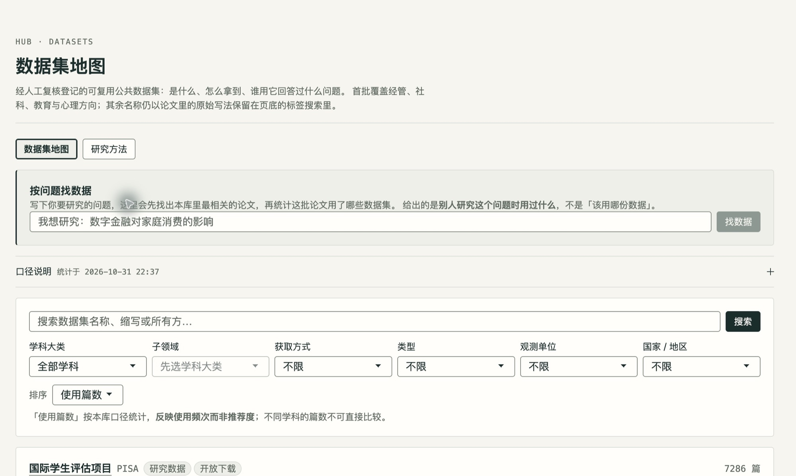
从研究问题反查别人用过什么数据
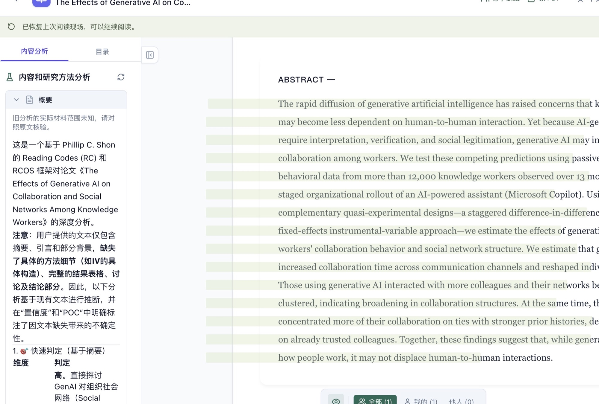
分析先标明自己的材料边界
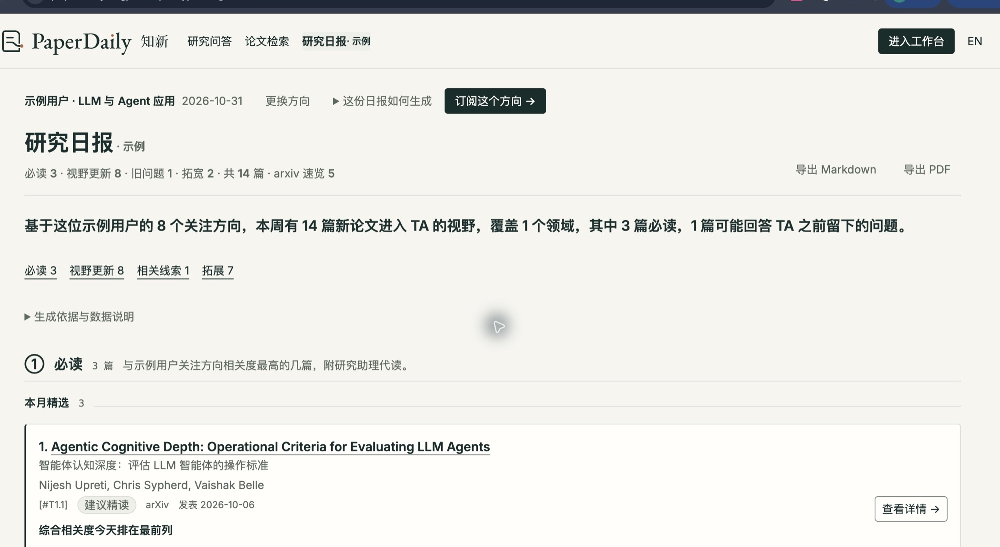
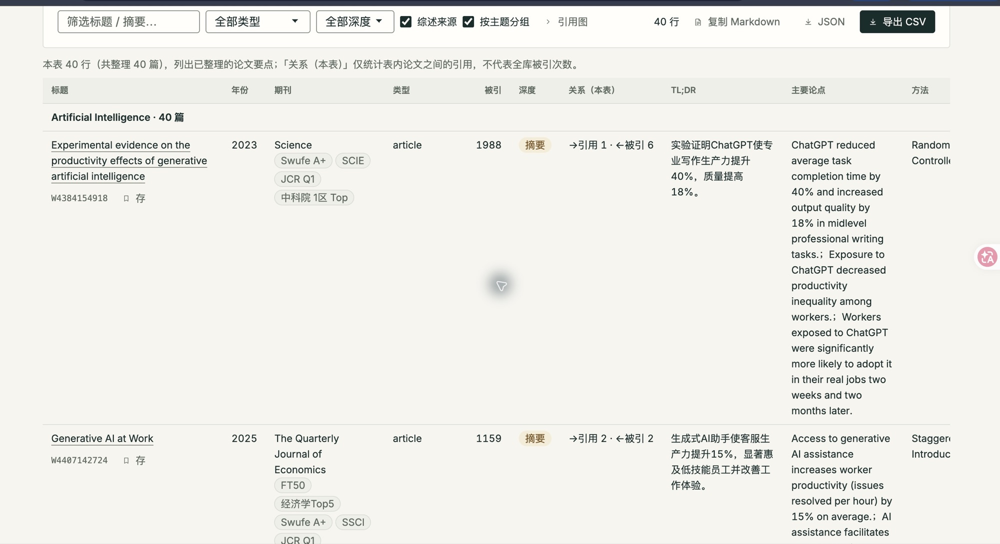